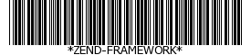

Zend_Barcode possède une méthode de fabrique pour créer une
instance d'un générateur de rendu qui étend
Zend_Barcode_Renderer_RendererAbstract. Ce méthode accepte 5
arguments.
Le nom du format de code-barres (ex. "code39") (obligatoire)
Le nom du générateur de rendu (ex. "image") (obligatoire)
Les options de l'objet code-barres (un tableau ou un objet
Zend_Config) (optionnel)
Les options du générateur de rendu (un tableau ou un objet
Zend_Config) (optionnel)
Booléen indiquant si le générateur automatique d'erreur est activé. Si
une exception intervient, l'objet code-barres fourni sera remplacé par un
objet représentant l'erreur (optionnel par défaut vaut
TRUE)
Exemple 59. Récupérer un générateur de rendu avec Zend_Barcode::factory()
Zend_Barcode::factory() instancie un objet code-barres
et un générateur de rendu et les lie ensemble. Dans le premier exemple, nous allons
utiliser le type de code-barres Code39 avec le générateur
de rendu Image.
// Seul le texte à écrire est obligatoire
$barcodeOptions = array('text' => 'ZEND-FRAMEWORK');
// Pas d'options requises
$rendererOptions = array();
$renderer = Zend_Barcode::factory(
'code39', 'image', $barcodeOptions, $rendererOptions
);
Exemple 60. Utiliser Zend_Barcode::factory() avec des objets Zend_Config
Vous pouvez fournir un objet Zend_Config à la fabrique afin
de créer les objets souhaités. L'exemple suivant est fonctionnellement équivalent
au précédent.
// En utilisant seulement un objet Zend_Config
$config = new Zend_Config(array(
'barcode' => 'code39',
'barcodeParams' => array('text' => 'ZEND-FRAMEWORK'),
'renderer' => 'image',
'rendererParams' => array('imageType' => 'gif'),
));
$renderer = Zend_Barcode::factory($config);
Quand vous dessiner un code-barres, vous récupérez la ressource
dans laquelle le code-barres est tracée. Pour ensuite tracer le code-barres, vous
pouvez appeler la méthode draw() du générateur de rendu ou
simplement utiliser la méthode proxy fournie par Zend_Barcode.
Exemple 61. Tracer un code-barres avec l'objet générateur de rendu
// Seul le texte à écrire est obligatoire
$barcodeOptions = array('text' => 'ZEND-FRAMEWORK');
// Pas d'options requises
$rendererOptions = array();
// Tracé du code-barres dans une nouvelle image
$imageResource = Zend_Barcode::factory(
'code39', 'image', $barcodeOptions, $rendererOptions
)->draw();
Exemple 62. Trace un code-barres avec Zend_Barcode::draw()
// Seul le texte à écrire est obligatoire
$barcodeOptions = array('text' => 'ZEND-FRAMEWORK');
// Pas d'options requises
$rendererOptions = array();
// Tracé du code-barres dans une nouvelle image
$imageResource = Zend_Barcode::draw(
'code39', 'image', $barcodeOptions, $rendererOptions
);
Quand vous générez un code-barres, vous dessinez le code-barres, vous envoyez les
entêtes et vous envoyez la ressource (par exemple vers un navigateur). Pour rendre un
code-barres, vous pouvez appeler la méthode render() du
générateur de rendu ou simplement utiliser la méthode proxy fournie par
Zend_Barcode.
Exemple 63. Effectuer le rendu d'un code-barres avec l'objet générateur de rendu
// Seul le texte à écrire est obligatoire
$barcodeOptions = array('text' => 'ZEND-FRAMEWORK');
// Pas d'options requises
$rendererOptions = array();
// Tracé du code-barres dans une nouvelle image,
// envoi des entêtes et de l'image
Zend_Barcode::factory(
'code39', 'image', $barcodeOptions, $rendererOptions
)->render();
Ceci générera ce code-barres :

Exemple 64. Effectuer le rendu d'un code-barres avec Zend_Barcode::render()
// Seul le texte à écrire est obligatoire
$barcodeOptions = array('text' => 'ZEND-FRAMEWORK');
// Pas d'options requises
$rendererOptions = array();
// Tracé du code-barres dans une nouvelle image,
// envoi des entêtes et de l'image
Zend_Barcode::render(
'code39', 'image', $barcodeOptions, $rendererOptions
);
Ceci générera le même code-barres que l'exemple précédent.